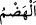
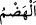

“Böyle bahçelerde,” bostanlarda “çeşme başlarında?” nehir boylarında?
Bâzıları Sâlih (a.s.)’ın kavmine âid akan nehirler olmadığını söylemiştir. Buna göre “ ile kasdedilen kuyulardır. Onların kışın kuyuları, yazın ise nehirleri olduğu da
ile kasdedilen kuyulardır. Onların kışın kuyuları, yazın ise nehirleri olduğu da
söylenir. Çünkü onlar yazın köşklerine, üzüm bağlarına ve nehir boylarına çıkarlardı.
148. Ekinlerin, meyveleri uç vermiş hurma ağaçlarının arasında?
Bahçelerin ağaçlarından olduğu halde diğer ağaçlardan üstün olduğu için hurma
ağaçları ayrıca zikredilmiştir. Hurma Âdem (a.s.)’ın çamurunun artanından yaratılmıştır.
“ kılıcın temreni/ucu gibi hurmanın çiçeklenerek çıkardığı tomurcuktur.
kılıcın temreni/ucu gibi hurmanın çiçeklenerek çıkardığı tomurcuktur.
Ortasında hurma salkımı vardır. Güneşin doğuşuna benzetilerek “ denilmiştir.
Nitekim el-Müfredât’ta böyle geçmektedir. “ kelimelerinin her biri,
kelimelerinin her biri,
hurma için üzüme göre salkım yerindedir, yani hurma salkımı demektir.
“ latîf ve cisminde yumuşaklık olan demektir. Hurmaların salkımı ve çiçeği nazik
latîf ve cisminde yumuşaklık olan demektir. Hurmaların salkımı ve çiçeği nazik
ve yumuşak olmaktır. Yâni meyve henüz yumuşak olduğundan dolayı “ meyve için
mecâz olur. “ incelik ve zayıflık demektir. “
incelik ve zayıflık demektir. “ ifâdesi de
ifâdesi de
buradandır. Beli ince ve zayıf demektir. Yemek yumuşak olup vücûda kolayca dağıldığı
ve istihâleye uğradığı zaman “ denilmesi de buradandır. Nitekim Keşfü’l-
denilmesi de buradandır. Nitekim Keşfü’l-
esrâr’da böyle geçmektedir.
Ya da “ latîf ve yumuşak demektir. Çünkü “
latîf ve yumuşak demektir. Çünkü “ (hurma ağacı) dişidir.
(hurma ağacı) dişidir.
Müenneslik zamiri de bunu destekler. Dişi hurma ağacının tomurcuğu daha latîf ve
yumuşak, erkeğinin tomurcuğu ise sert ve katıdır.
Şeyhzâde der ki: “Bernî hurmasının tomurcuğu levn hurmasınınkinden daha
latîftir/yumuşaktır. Bernî en iyi hurma cinsidir. Bu kelime sonradan Arapça’ya girmiş
(muarrab) bir kelimedir. Aslı “bernîk”, yâni iyi yük demektir.”
Levn, hurmanın en kötü cinsidir. Medineliler, bernî ve acve cinsi dışındaki hurmaları
“elvân” (levn’in çoğulu) diye isimlendirirler.
Hurma tomurcuğu birbirine geçmiş ve yapışmış olduğu için çanağının içinde olduğu
müddetçe “ (latîf/yumuşak)” diye vasfedilir. Çanağından çıkınca artık latîf/yumuşak
(latîf/yumuşak)” diye vasfedilir. Çanağından çıkınca artık latîf/yumuşak
değildir.
İmam Râğıb der ki: “ kendisinde gevşeklik olan bir şeyi yarmak demektir. “ salkımları sanki yarılmış gibi birbiri içine girmiş hurma ağaçları
kendisinde gevşeklik olan bir şeyi yarmak demektir. “ salkımları sanki yarılmış gibi birbiri içine girmiş hurma ağaçları
anlamınadır.”
Ya da “ çok yükten dolayı sarkan ve kırılan demektir. Çünkü “ kırmak,
çok yükten dolayı sarkan ve kırılan demektir. Çünkü “ kırmak,